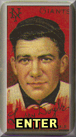

Larry Joseph Doyle was born July 31 1886 in Caseyville, Illinois. He began playing for the New York Giants in 1907 at the age of 21. He was so nervous on the first day that he took the wrong ferry and was late for his premier pro game. Giants manager, John McGraw, who was known to be strict at times, took it in stride and Larry, with his powerful hitting and solid defense, held a steady job for the next fourteen years. The only change in his routine of tending second base with the Giants was when he went to the Chicago Cubs for a year and a half. That was from 1916 to 1917. He was MVP in 1912 and played a big part in the Giants winning of the pennant for three years in a row, from 1911 through 1913. Larry developed TB in 1920's. His best friend and fellow Giant, Christy Mathewson developed the disease also and they both came to Saranac Lake to cure. Christy lived at his home on Park Avenue and Larry took up residency at Trudeau San, where AMA is now located, and lived there for many years. Larry was, in fact, the last patient to leave the Trudeau San when it closed in 1954 and that famous photo of him walking towards the gates of Trudeau, a suitcase in each hand and snow gusting all around him, was in every newspaper and magazine on the newsstands that week. I don't know if the media posed the photo or not but it was effective. It got the point across that Trudeau San was closed for good and that the TB era was kaput. It was a sad day for both Larry and Saranac Lake, which had depended on the TB industry for years.
I first became acquainted with Laughing Larry while I was working at the Dew Drop Inn, tossing pizzas. This was in the early 60's when baseball was still a game and not a big money industry. Larry enjoyed being with the other regulars and they, in turn, reveled in the time spent with him. His laughter was contagious and could make you forget any problems you might have at the time. He was quick with a quip and had amazing timing. Larry could have been a great comedian if he hadn't been so good at baseball. He constantly kept the crew at Dew Drop's laughing with his stories of bygone days of baseball. He came by his knickname quite naturally. Every afternoon Laughing Larry could be found on the first barstool on the right, the one closest to the kitchen. If someone was occupying that stool when Larry entered, the offender would politely move down to the next available stool or, if there were none empty, belly up to the bar so that Larry could have his choice seat. I recall doing that myself on occasion. Larry was a gentleman and he instilled that quality in all who surrounded him. Although he enjoyed a brew or two or three I never saw him the least bit affected by them. As a young pizza cook who would get a buzz from one brew, I was both puzzled and amazed at that ability.
Larry had to have an operation on his eyes around 1961. I believe it was cataract surgery and he had to wear thick, coke-bottle type glasses after that. He joked about them the same as he did about everything else. Sometimes, when we were all watching a ball game, he would become quiet and I could see his eyes take on a strange, faraway look through those thick lenses. It was as if he were trying to project himself onto the ball field on the TV screen. I imagined that he was thinking, "It WAS great to be young and a Giant". I never asked him what he was thinking during those moments of silence nor did anyone else. Everyone needs a personal moment once in a while.
As the next few years passed, Larry seemed to slow down and had a noticeably harder time getting around. The stairs were too steep and he would come in the back door. His favorite seat was empty more frequently and then on March first 1974 at 88 years of age Laughing Larry Doyle joined his teammates of summers past and left his old Dew Drop Inn cronies to spend their summer afternoons watching the ballgames without the pleasure of his laughter and company. Another era was over for Saranac Lake. Larry was a true giant both in the ball park and on the barstool and we were fortunate to have known him.